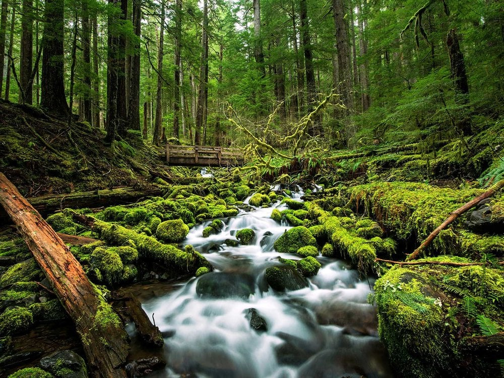

This sight gives an insight about nature
Nature is an important and integral part of mankind. It is one of the greatest blessings for human life.
The word nature is borrowed from the Old French nature and is derived from the Latin word natura, or "essential qualities, innate disposition", and in ancient times, literally meant "birth".
Nature can refer to the general realm of living plants and animals, and in some cases to the processes associated with inanimate objects—the way that particular types of things exist and change of their own accord, such as the weather and geology of the Earth. It is often taken to mean the "natural environment" or wilderness—wild animals, rocks, forest, and in general those things that have not been substantially altered by human intervention, or which persist despite human intervention.
Some of the facts about nature are:
- Acacia trees can warn each other of danger..
- An extinct species of penguins was nearly 7-feet tall!.
- The world’s oldest trees are 4,600 year old Bristlecone pines in the USA.
- Hurricanes release the energy of 10,000 nuclear bombs.
- Bamboo is the world's fastest growing plant.
- The first carrots grown were purple.
- Amazon rainforest produces 20% of the world’s oxygen gas.
- Racoons are very smart animals. They can open the hardest locks in less than 10 times effort
- The Rain Drops got the ascent because of vitamin B12.